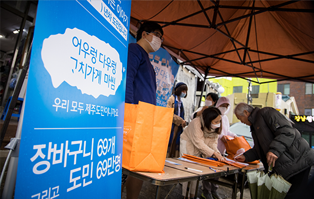
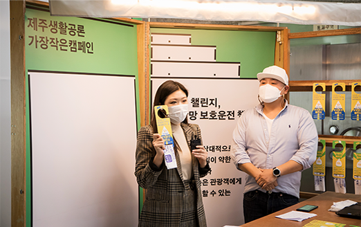
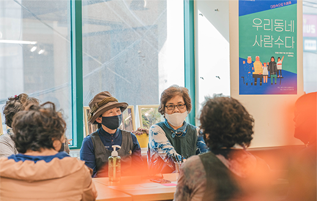
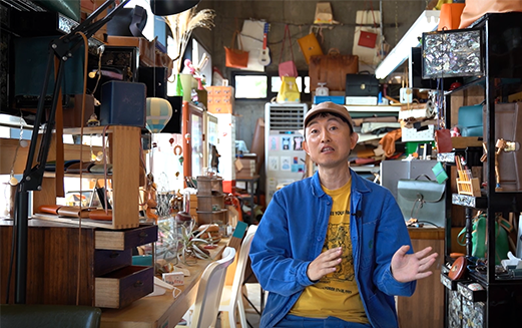
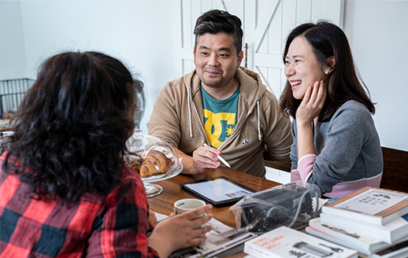
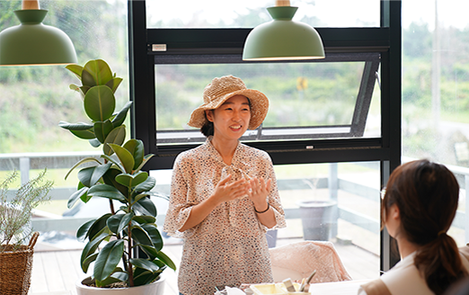

센터소개
생활기반 지역 공론장
주민들 스스로 일상생활의 불편함이나 문제를 공론화하여 더 나은 제주를 위해
실천 가능한 해결방법을 찾아보는 과정을 진행합니다.
- 제주생활공론
-
생활 속 불편이나 문제점을 여러 사람과 함께 나누고 실천 가능한 해결 방안까지 찾아보는 공론 과정 운영, 공공캠페인을 기획·실행할 수 있도록 지원하여 시민 참여 확산
 대상 제주 이슈에 관심을 가지고 숙의를 거쳐 캠페인 실행으로 옮기고 싶은 주민 누구나진행과정- 참여자 모집 지역주민, 디자이너(캠페인 메시지를 효과적으로 전달하는 시각디자인 담당)
- 공론장 개최 참여자별 공론장 주제를 공유하고 분야별 논의 및 질문 도출을 통해 실행팀 구성
- 공공 캠페인 기획 및 운영 팀별 주제에 따른 캠페인 기획·실행 지원
- 결과공유회 사업참여자, 주민, 유관기관 관계자를 대상으로 제주생활공론 사업추진 성과 및 주요결과를 공유하여 지역사회 전체 공론화 기대
- 언컨퍼런스 종료사업
-
다양한 세대와 계층 간의 대화의 장을 마련하여 지역주민들이 관심있는 제주의 이슈 및 아젠다를 발굴하고, 참여자들이 주도적으로 주제와 진행방식을 정해 대화하는 소통 방식 실험 운영
 일상 속 이슈를 살피는 마을주민 토론회
(20차례 소규모 모임 개설)  제주에서 혼자 일하는 혼잡(JOB)러들의 이야기
(온라인 설문조사 및 1:1대면 인터뷰 진행)
- 놀러가게 종료사업
-
지역 주민들의 일상생활 공간에서 다양한 관심사를 주제로 대화 모임을 열고 소통의 장 마련
 